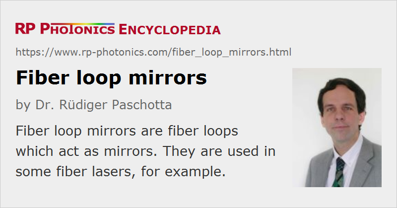

Fiber Loop Mirrors
Acronym: FLM
Definition: fiber loops which act as mirrors
German: Faserschleifen-Spiegel
Categories: fiber optics and waveguides, nonlinear optics, photonic devices
How to cite the article; suggest additional literature
Author: Dr. Rüdiger Paschotta
A simple way to realize a reflecting device (a mirror) in fiber optics is to make a fiber loop, using a two-by-two directional fiber coupler where the ports on one side are connected to each other with a piece of fiber (see Figure 1).
If one feeds light into one input port (e.g., the upper one in Figure 1), the power is split so that two counterpropagating waves are formed in the loop. When these waves then again come together at the coupler, they interfere with each other. This interference determines the optical power sent back into the input port as well as the power leaving the other port. The interference conditions can in general be influenced by various aspects that as multimode behavior, polarization changes and nonlinear effects.
The fiber loop mirror can also be considered as a Sagnac interferometer.
Linear Fiber Loop Mirrors
In the simplest case, one uses only single-mode fibers, and the polarization state remains unchanged during propagation. (One may use polarization-maintaining fiber or alternatively a fiber polarization controller to obtain that situation even when using a long loop.) Also, we assume that the optical powers are so low that nonlinear effects (particularly the Kerr effect) are negligibly weak. Further, we assume that no power losses occur in the fibers, and that the fiber coupler has 50:50 power splitting ratio (i.e., it is a 3-dB coupler). In this simple case, the interference conditions are such that all injected power goes back to the port into which it was injected. This means that the fiber loop mirror acts as a perfect reflector, working in a wide range of wavelengths, and for any input polarization state. The length of the fiber loop is not relevant in this case. Similarly, environmental effects on the fiber in the loop such as temperature changes have no effect as long as they cannot affect the polarization.
If the power splitting ratio deviates from 50:50, one obtains less than 100% reflectance. This is shown in Figure 2. Again, the results are not dependent on the loop length.
As the coupling ratio of a fiber coupler usually exhibits a substantial wavelength dependence, this transforms into an overall wavelength-dependent reflectance of the fiber loop mirror.
A strong wavelength dependence can also be associated with birefringence. If a highly birefringent fiber (e.g. a polarization-maintaining fiber) is incorporated into the fiber loop, and the polarization evolution is properly adjusted with a fiber polarization controller, the spectral transmission function can exhibit pronounced oscillations. Their spectral period is inversely proportional to the birefringence (the index contrast between the polarization directions) and the length of that fiber. As the positions of the relatively sharply defined transmission dips react to temperature and strain, the configuration can be used as a fiber-optic sensor. An attraction is that whereas one measures changes of birefringence with interferometric accuracy, one is not particularly sensitive to environmental influences on the ordinary fiber connecting the birefringent fiber. One may also realize nearly temperature-independent optical strain sensors by using highly birefringent photonic crystal fibers, exhibiting a low temperature dependence of the birefringence, at least when the polymer coating is removed.
Nonlinear Fiber Loop Mirrors
Particularly for ultrashort pulses in fibers, the Kerr nonlinearity can have substantial effects, as the peak power can be high. However, as long as the fiber loop remains symmetric and the coupling ratio is 50:50, the occurring nonlinear phase shifts do not influence the fiber loop's reflectance. This is because these phase shifts are the same for light propagating in both directions, so that these additional phase shifts cannot affect the interference conditions.
This changes for an asymmetric design. For example, a fiber loop may contain a rare-earth-doped fiber, which can amplify light when suitable pump light is injected, and a long passive fiber (see Figure 3). This configuration is called a nonlinear amplifying loop mirror (NALM). When light injected on the left side at a low power level, it will be mostly reflected back into the same port. In case of ultrashort pulses with a substantial peak power, however, we have substantial nonlinear phase changes in the loop. These are stronger for light propagating in counter-clockwise direction, since this is first amplified and then travels through the long passive fiber. Light in the opposite direction propagates with a lower power level for most of the length. As a result, the interference conditions are affected such that a power-dependent fraction of the input light reaches the upper output port.
Such a power dependence would also result from strong optical attenuation on one side of a long passive fiber only, or simply from having an asymmetric coupling ratio. In that case, one has a nonlinear loop mirror (NOLM).
The operation details are complicated by the fact that the nonlinear phase shift is not constant over the temporal pulse profile, but rather strongest for the peak and weaker in the wings. Furthermore, chromatic dispersion can have substantial effects. Therefore, the overall behavior can be understood well only by using a numerical simulation model. Figure 4 shows the outputs in an example case, where the loop contains a 1 m long ytterbium-doped fiber and a 10 m long passive fiber. For soliton-shaped input pulses with 0.1 nJ energy and 2 ps duration, a substantial part of the output power goes into the upper output port. The amplifier is pumped with 100 mW at 975 nm, and the steady state for a pulse train with 10 MHz repetition rate has been calculated. Both fibers exhibit normal dispersion; in the anomalous dispersion regime, where soliton effects can occur, the characteristics of the nonlinear loop mirror are significantly different.
For the pulse peak, the difference in nonlinear phase shifts between the two propagation directions in the loop is larger than π, which would be the ideal value for coupling to the upper output port. However, this improves the coupling in the wings. Overall, this situation is close to the case with optimum coupling.
Generally, substantial pulse distortions must be expected, even though their type and magnitude can strongly depend on details like chromatic dispersion and operation power levels.
Figure 5 shows how the ratio of output energy in the upper port to input energy in the lower port varies with the input pulse energy. This dependence is influenced by various effects: increasing gain saturation in the amplifying fiber and increasing pulse distortions through chromatic dispersion and fiber nonlinearity for increasing pulse energies.
There are various applications of nonlinear fiber loop mirrors:
- In a mode-locked fiber laser, such a device can act as an artificial saturable absorber which starts and stabilizes the mode locking, i.e., the pulse formation [6]. A well-known embodiment of this approach is the figure-of-eight fiber laser, where the nonlinear fiber loop mirror forms one part of the “eight” and the actual laser resonator the other one. The article on mode-locked fiber lasers contains more details on this.
- In optical fiber communications, nonlinear loop mirrors can be used as nonlinear filters. For example, a well designed filter may well transmit soliton pulses (without substantial distortions) while largely suppressing any low-intensity background radiation; it can then be called a soliton filter. The same can also be useful in other application areas where optical signal processing is required.
Questions and Comments from Users
Here you can submit questions and comments. As far as they get accepted by the author, they will appear above this paragraph together with the author’s answer. The author will decide on acceptance based on certain criteria. Essentially, the issue must be of sufficiently broad interest.
Please do not enter personal data here; we would otherwise delete it soon. (See also our privacy declaration.) If you wish to receive personal feedback or consultancy from the author, please contact him e.g. via e-mail.
By submitting the information, you give your consent to the potential publication of your inputs on our website according to our rules. (If you later retract your consent, we will delete those inputs.) As your inputs are first reviewed by the author, they may be published with some delay.
Bibliography
| [1] | N. J. Doran and D. Wood, “Nonlinear-optical loop mirror”, Opt. Lett. 13 (1), 56 (1988), doi:10.1364/OL.13.000056 |
| [2] | K. J. Blow et al., “Demonstration of the nonlinear fibre loop mirror as an ultrafast all-optical demultiplexer”, Electron. Lett. 26, 962, (1990), doi:10.1049/el:19900626 |
| [3] | M. E. Fermann et al., “Nonlinear amplifying loop mirror”, Opt. Lett. 15 (13), 752 (1990), doi:10.1364/OL.15.000752 |
| [4] | K. Smith et al., “Pulse shaping, compression, and pedestal suppression employing a nonlinear-optical loop mirror”, Opt. Lett. 15 (22), 1294 (1990), doi:10.1364/OL.15.001294 |
| [5] | D. J. Richardson et al., “Selfstarting passively mode-locked fibre laser based on the amplifying Sagnac switch”, Electron. Lett. 27, 542 (1991), doi:10.1049/el:19910341 |
| [6] | I. N. Duling, III, “Operation of a nonlinear loop mirror in a laser cavity”, IEEE J. Quantum Electron. 30 (1), 194 (1994), doi:10.1109/3.272080 |
| [7] | S. Feng et al, “Reflectivity characteristics of the fiber loop mirror with a polarization controller”, Opt. Commun. 277 (2), 322 (2007), doi:10.1016/j.optcom.2007.05.016 |
| [8] | J. W. Nicholson and M. Andrejco, “A polarization maintaining, dispersion managed, femtosecond figure-eight laser”, Opt. Express 14 (18), 8160 (2006), doi:10.1364/OE.14.008160 |
| [9] | O. Frazão et al., “Recent advances in high-birefringence fiber loop mirror sensors”, Sensors 7, 2970 (2007), doi:10.3390/s7112970 |
See also: fibers, fiber couplers, fiber lasers, mode-locked fiber lasers, fiber-optic sensors
and other articles in the categories fiber optics and waveguides, nonlinear optics, photonic devices
|  |
If you like this page, please share the link with your friends and colleagues, e.g. via social media:
These sharing buttons are implemented in a privacy-friendly way!